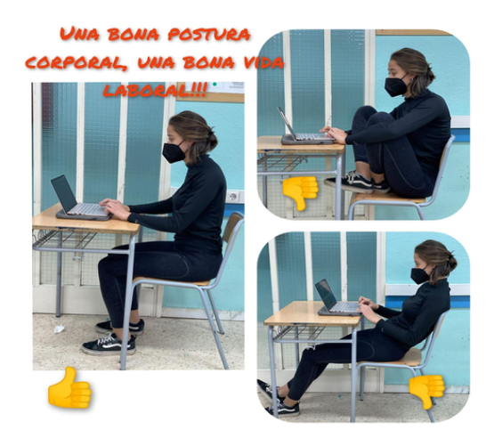

LES MILLORS OFERTES PER VIATJAR A BALI!!

VIU LA NIT MÉS MÀGICA DE LA TEVA VIDA A ISLÀNDIA

NO ET PERDIS LA MÀGIA D'UN DESTÍ COM EL SALVADOR
Política en matèria de prevenció
La política de l'empresa en matèria de prevenció té com a objectiu garantir als treballadors/res una protecció eficaç davant els riscos laborals de manera que el treball s'efectua en les millors condicions de seguretat i salut.
Principis d’actuació en matèria preventiva.
1. L'empresari ha d'aplicar les mesures que integren el deure general de prevenció previst a l'article anterior, d'acord amb els principis generals següents:
Evitar els riscos.
Avaluar els riscos que no es poden evitar.
Combatre els riscos en el seu origen.
Adaptar la feina a la persona, en particular en el que fa referència a la concepció dels llocs de treball, com també a l'elecció dels equips i els mètodes de treball i de producció, amb l'objectiu específic d'atenuar la feina monòtona i repetitiva i de reduir-ne els efectes en la salut.
Tenir en compte l'evolució de la tècnica.
Substituir el que sigui perillós pel que comporti poc perill o no en comporti cap.
Planificar la prevenció, amb la recerca d'un conjunt coherent que hi integri la tècnica, l'organització de la feina, les condicions de treball, les relacions socials i la influència dels factors ambientals en el treball.
Adoptar mesures que donin prioritat a la protecció col·lectiva respecte de la individual.
Facilitar les degudes instruccions als treballadors.
2. L'empresari ha de considerar les capacitats professionals dels treballadors en matèria de seguretat i de salut en el moment d'encarregar-los les feines.
3. L'empresari ha d'adoptar les mesures que calgui amb la finalitat de garantir que només els treballadors que hagin rebut prou informació i de manera adequada puguin accedir a les zones de risc greu i específic.
4. L'efectivitat de les mesures preventives ha de preveure les distraccions o les imprudències no temeràries que podria cometre el treballador. Per adoptar-les cal tenir en compte els riscos addicionals que poden implicar determinades mesures preventives, les quals només s'han de poder posar en pràctica quan la magnitud d'aquests riscos sigui substancialment inferior a la dels que es pretén controlar i quan no hi hagi unes alternatives més segures.
5. Podran concertar operacions d'assegurança que tinguin la finalitat de garantir com a àmbit de cobertura la previsió de riscos derivats del treball l'empresa respecte dels seus treballadors, els treballadors autònoms respecte d'ells mateixos i les societats cooperatives respecte dels seus socis l'activitat dels quals consisteixi en la prestació del seu treball personal.
Disseny i elaboració de cartells i fullets de prevenció:
No et preocupis pels teus viatges, nosaltres ens encarreguem de tot
Viatges organitzats a:
Costa Rica
Lanzarote
Islàndia
Bali
Països Baixos
Marroc
Uruguay
El Salvador
Veneçuela
Argentina
Bolivia
Brasil
Itàlia
Alemanya
Anglaterra
Japó
Canadá
India
Estats Units